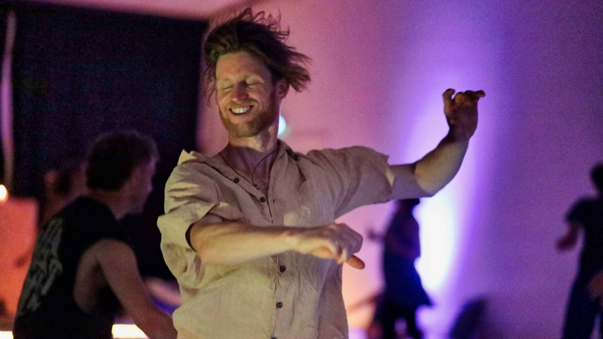
Freies Tanzen in Freiburg, sonntags 17–20 Uhr im Studio Pro Arte. Ohne Schritte, ohne Alkohol, getragen von einer Musikreise in zwei Wellen.
Wir beginnen im Kreis mit einer kurzen Einstimmung. Dann tragen dich zwei Musikwellen durch zwei Stunden, mal zart und sphärisch, mal kräftig und wild. Am Ende wird es still. Niemand macht vorne etwas vor, und niemand schaut dir zu.
Tanzen hilft. Immer. Wenn sich der Körper frei bewegt, kommt in Fluss, was sonst festsitzt. Wir werden weicher und durchlässiger und spüren wieder, wer wir sind. Aus dieser Entspannung heraus öffnet sich, wer wir noch sein können.
Ob du einfach für dich tanzen willst, freie Kontaktimprovisation an der Grenze des Bekannten suchst oder erkundender Intimität und authentischer Begegnung Raum gibst: Alles hat hier Platz.
Wir kommen zusammen, um das Leben zu feiern, in all seinen Facetten. Lass dich überraschen, was passiert, wenn du mit einer klaren Absicht in den Tanz gehst und der Intelligenz deines Körpers Raum gibst.
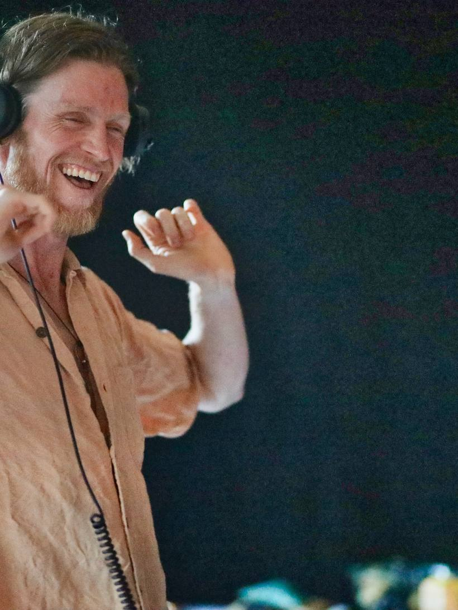
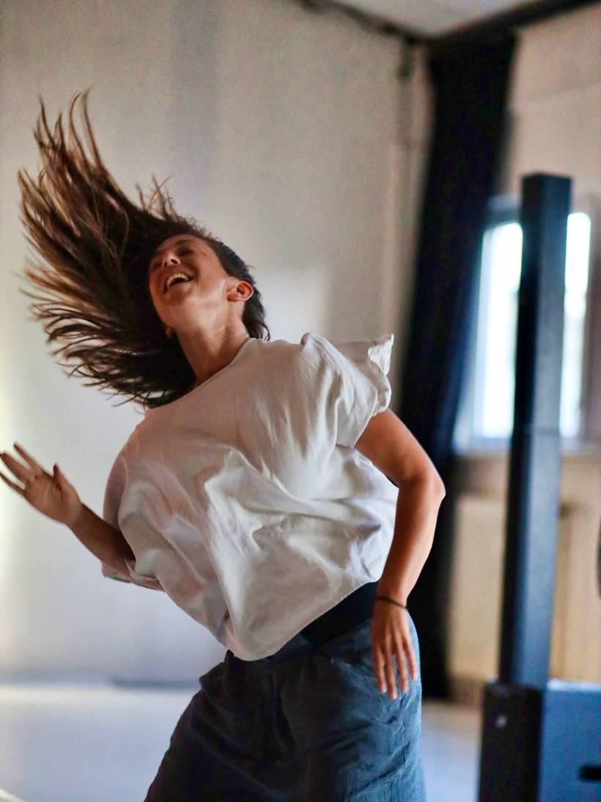
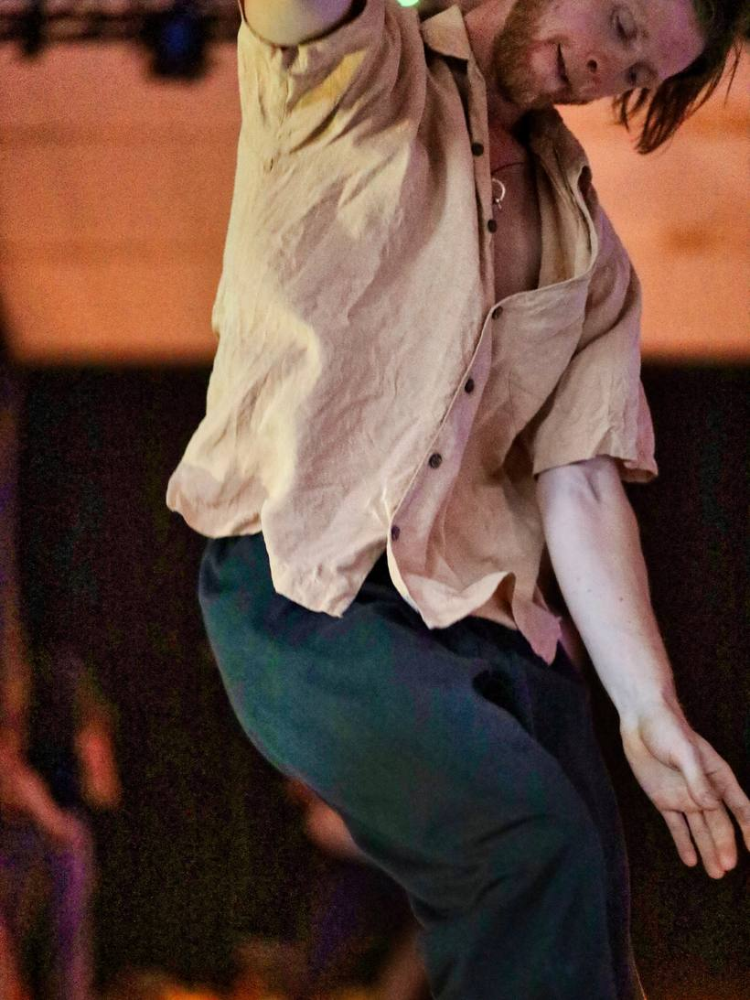
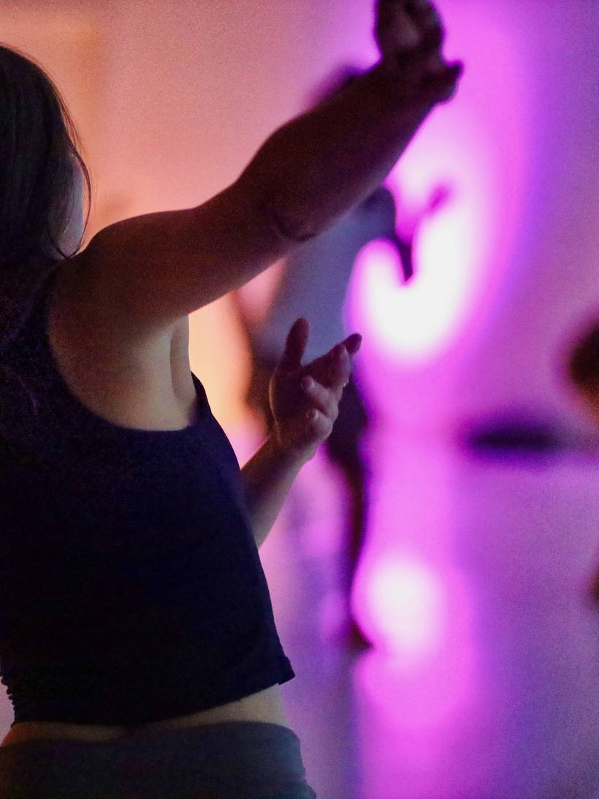
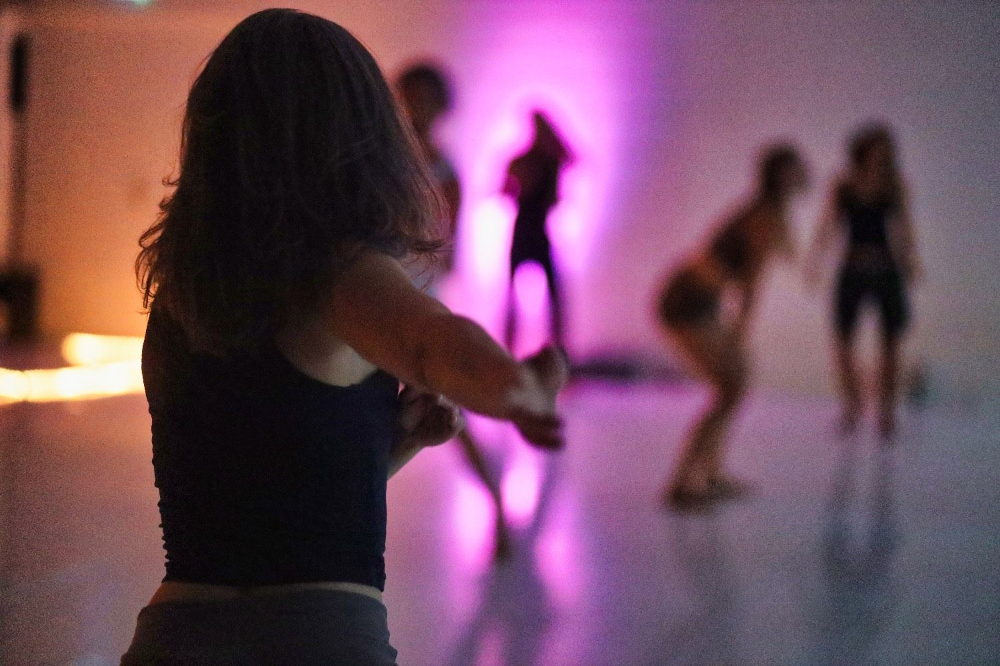
Komm an und schaffe dir deinen Übergang. Umkleiden unten.
Kurze Meditation & Einstimmung im Kreis.
Ein Bogen über zwei Stunden, vom Zarten ins Kraftvolle und wieder zurück.
Präsenz, Stille und ein geteiltes Nachklingen der Bewegung.
Ein großer weißer Tanzboden mit gutem Sound im Studio Pro Arte. Liebevoll gestaltete Altäre, warmes Licht und eine kontemplative Atmosphäre laden dich ein, dich einzulassen, dich überraschen und von den Wellen mitreißen zu lassen. Ein Raum, in dem Zartes und Kraftvolles nebeneinander Platz haben.
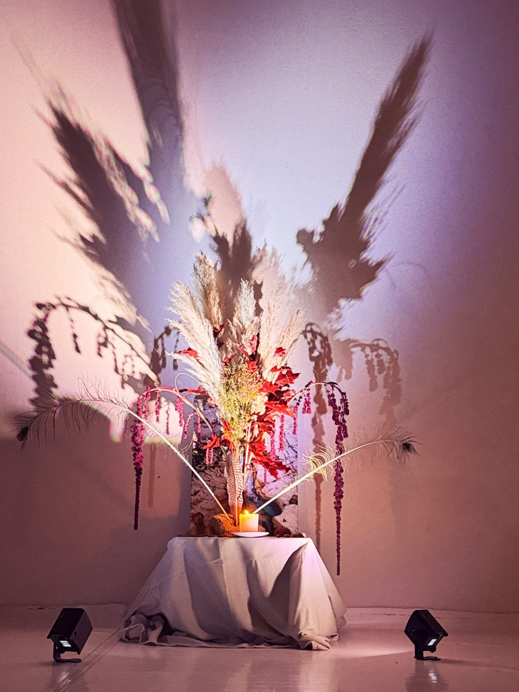
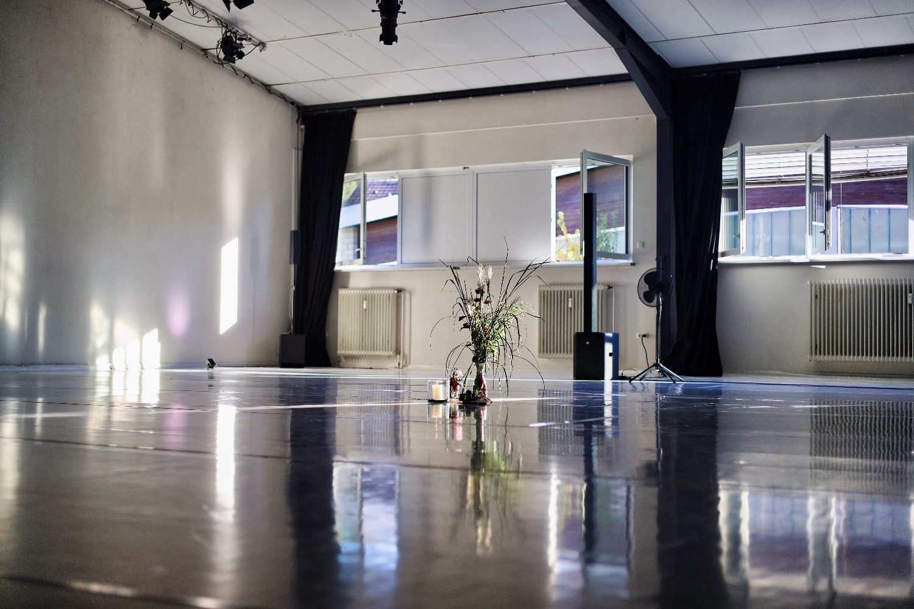
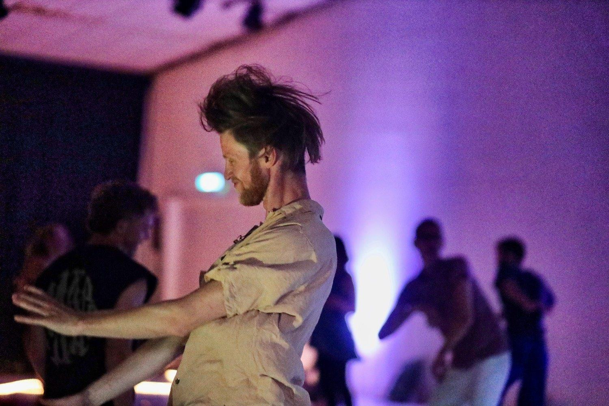
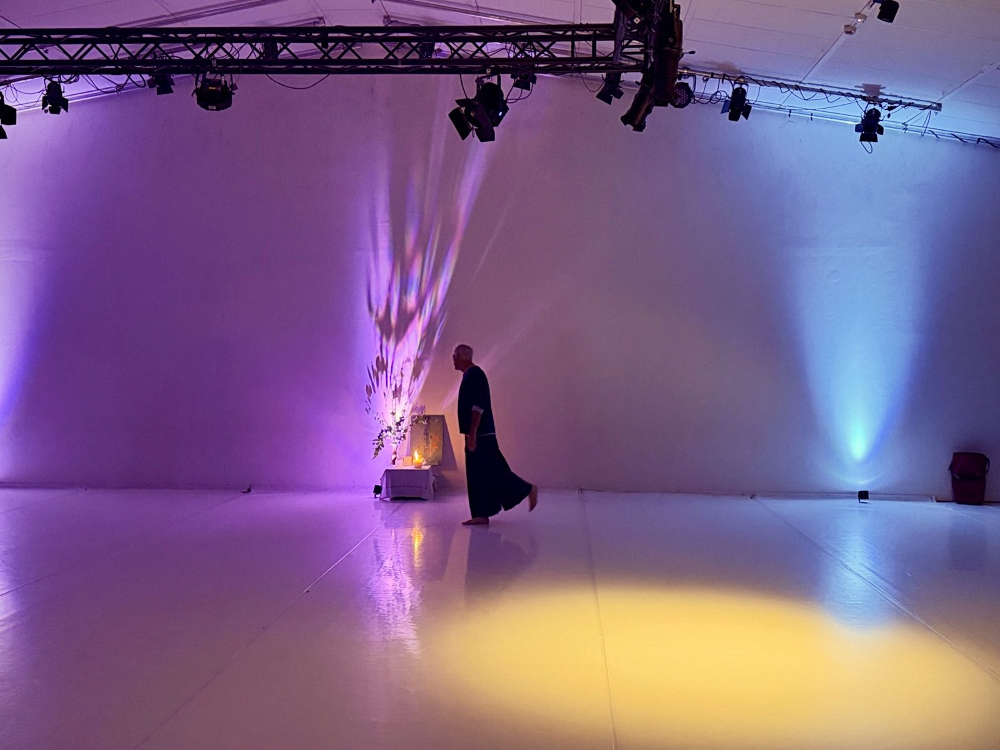
Für jeden Abend wähle ich rund 40 Stücke aus der Musik der Welt, zart und kraftvoll, und frage mich bei jedem: Hat der Song ein Herz? Wenn du wissen willst, wie so ein Abend klingt, hör rein.
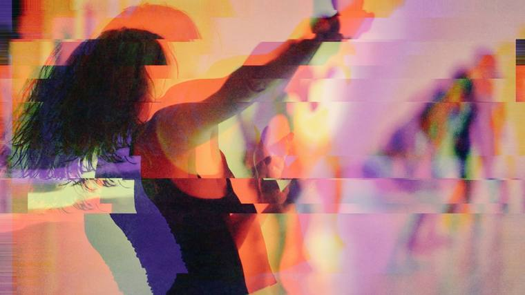
4 OktoberOkt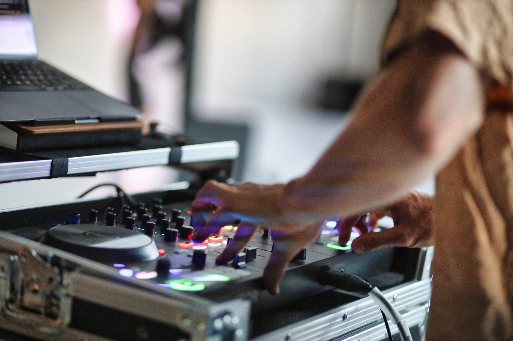
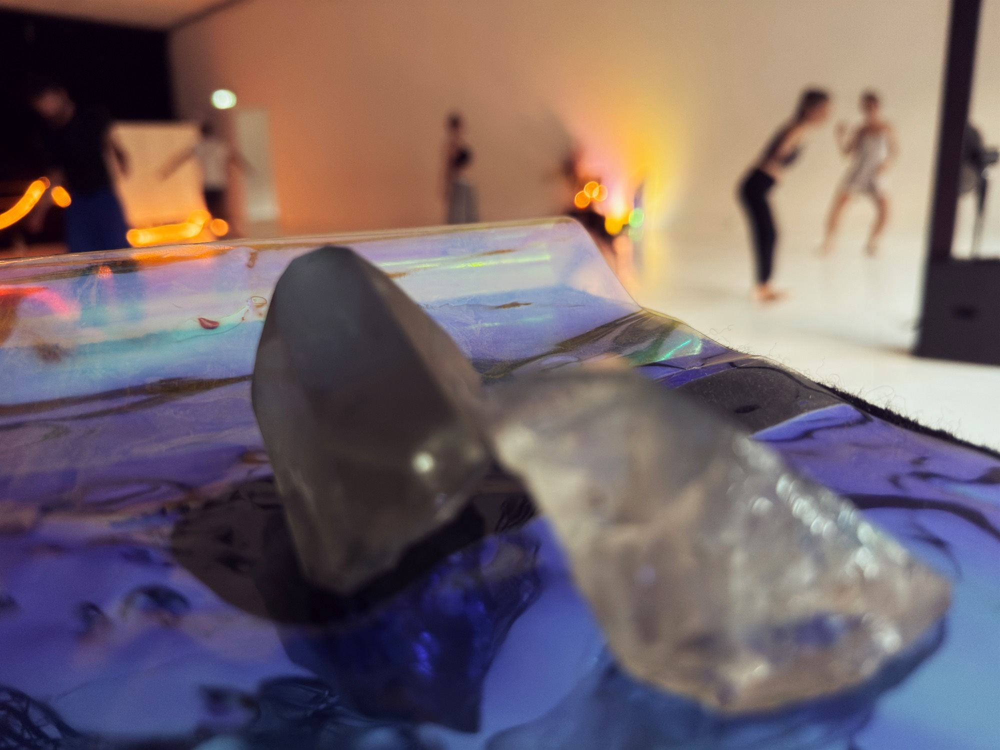
Ich lege auch außerhalb von Freiburg auf: auf Festivals, Retreats, Hochzeiten, Feiern und Zeremonien. Immer dann, wenn ein bewusster Tanzraum entstehen soll.
Ich spiele live und lese den Raum: wann er Tempo braucht, wann Stille, wann der Moment da ist, an dem alle gleichzeitig loslassen. Den Raum gestalte ich gern gemeinsam mit dir, mit allem, was ein guter Raum braucht, von der Schönheit über guten Sound bis zur Musikauswahl.
Ecstatic Dance ist freies Tanzen ohne Schrittfolgen, ohne Vortänzer und ohne Alkohol, getragen von einer Musikreise. In Freiburg findest du mein Essential Dance sonntags von 17 bis 20 Uhr im Studio Pro Arte: mit einer Einstimmung im Kreis, zwei Tanzwellen und einem stillen Ausklang.
Der Rahmen ist derselbe, und er hat sich bewährt. Ich habe selbst zehn Jahre lang Ecstatic Dance getanzt. Der Unterschied liegt darin, wie ich den Raum halte: in einer Musik, die ohne Dogma zwischen sehr fein und sehr kraftvoll pendelt, und in einem Rahmen, der so sicher ist, dass auch tiefere Bewegung möglich wird. Welche Musik dich trägt, ist immer auch Geschmackssache. Komm und spür, ob es deine ist.
Bei Essential Dance: sonntags von 17 bis 20 Uhr im Studio Pro Arte, Am Rohrgraben 4a in Merzhausen, direkt am Stadtrand von Freiburg. Freies Tanzen ohne Schritte und ohne Alkohol, getragen von einer Musikreise in zwei Wellen. Die genauen Termine stehen im Kalender.
Verwandt, aber keine dieser Methoden. Es gibt keine festgelegten Rhythmen und keine Technik, die du lernen musst. Mich haben Ecstatic Dance, Kontaktimprovisation und Movement Medicine geprägt, und davon fließt etwas ein: die Musikreise in Wellen, die Einladung zur Begegnung, die Absicht, mit der wir in den Tanz gehen. Geführt wird nur die Einstimmung, der Rest ist freies Tanzen.
Ich würde es nicht so nennen. Es ist ein Tanzabend. Er kann mehr werden, wenn du willst: Wer mit einer Absicht tanzt, kommt oft an Stellen, die mit Nachdenken nicht erreichbar sind.
Das Ticket kostet ab 15 € im Vorverkauf über Eventfrog und ab 20 € an der Abendkasse. Anmelden musst du dich nicht. Die Ticket-Links findest du oben bei den Terminen.
Nein. Es gibt keine Schritte und niemanden, der vorne etwas vormacht. Wenn du gehen kannst, kannst du hier tanzen. Und wenn du nur stehen und atmen willst, ist das auch Tanz.
Beides. Die meisten kommen allein und müssen niemanden ansprechen. Wer zu zweit oder zu dritt kommt, kann gemeinsam ankommen und dann trotzdem jede und jeder für sich tanzen.
Begegnung ist eine Einladung, keine Verpflichtung. Ein Nein braucht keine Begründung: Ein abgewandter Blick reicht und wird respektiert.
Etwas Bequemes, in dem du dich gern bewegst. Getanzt wird barfuß oder in Socken. Nimm etwas zum Wechseln und eine Trinkflasche mit.
Ja. Schön ist der Anfang, denn die Einstimmung trägt den ganzen Abend. Wenn es später wird, komm trotzdem: leise rein, Schuhe aus, und lass dich von der Welle aufnehmen, die gerade läuft.
Wenn du regelmäßig kommst, lohnt sich die Achterkarte: acht Abende, die du einlöst, wann du willst. Sie liegt vor Ort aus, jeden Abend gibt es einen Stempel. Ist die Karte voll, ist der nächste Abend für dich umsonst.
Ja. Ich lege in Freiburg und auch außerhalb auf: bei Hochzeiten, Feiern und Partys, auf Festivals, bei Retreats und Zeremonien. Schreib mir über „Booking anfragen“ den Anlass, das Datum, den Ort und die ungefähre Größe der Gruppe.